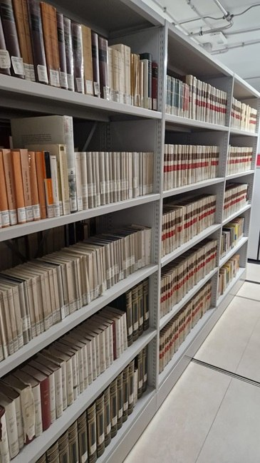
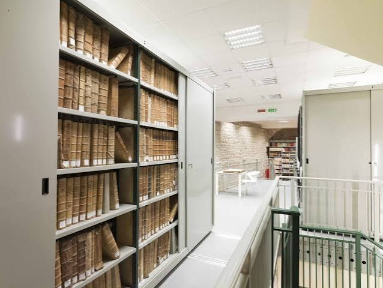
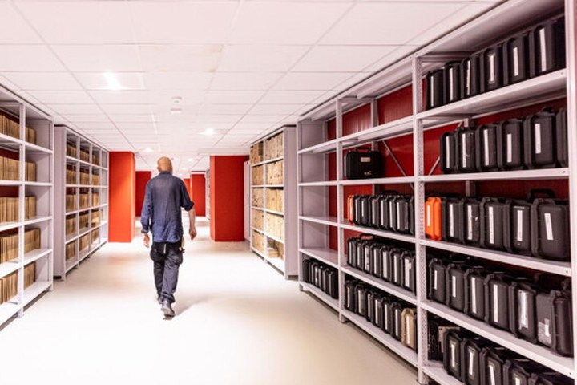

L’idea
Digitalizzare una parte dei documenti più richiesti, descriverli con testi leggibili da sintesi vocale e predisporre una postazione di consultazione con ingranditore e software di lettura dello schermo.
Le attività previste
- Digitalizzazione dei documenti Acquisizione di una selezione di pagine dei fondi storici.
- Catalogazione accessibile Descrizioni testuali e metadati leggibili da sintesi vocale.
- Riconoscimento del testo Software OCR e di lettura per consultare i documenti digitali.
- Postazione di consultazione accessibile Ingranditore da tavolo e monitor di grandi dimensioni.
Foto


